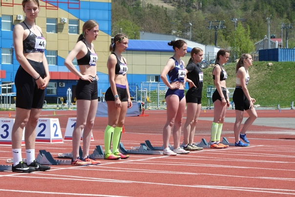
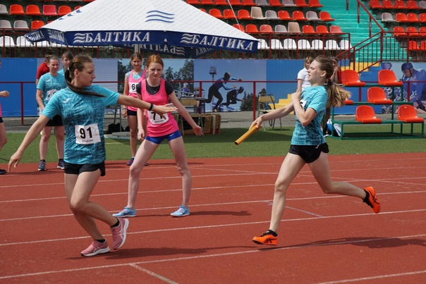

Team Formation:
Participants are divided into teams, ideally with an equal mix of individuals from different backgrounds and abilities. This promotes diversity, teamwork, and collaboration.
Course Design:
Set up a well-defined outdoor course with designated checkpoints, each representing a different aspect of empowerment. The course can include challenges that require physical activity, creativity, and teamwork.
Challenges:
Each checkpoint presents a unique challenge related to empowerment, such as completing a positive affirmation puzzle, striking power poses, sharing personal strengths, or conquering a mini obstacle that symbolizes overcoming obstacles.
Empowerment Baton:
Instead of a traditional baton, teams pass an "Empowerment Baton" from one member to another. This baton can be a symbolic object representing strength and unity.
Teamwork and Strategy:
Encourage teams to strategize and collaborate effectively. The relay race is not only about speed but also about supporting each other, motivating teammates, and embodying the spirit of empowerment.
Inclusivity:
Ensure that the challenges are accessible to participants of varying fitness levels and abilities, promoting inclusivity and ensuring everyone can contribute.
Positive Atmosphere:
Create a positive and supportive atmosphere where participants uplift and inspire one another. Celebrate both individual accomplishments and collective efforts.
Scoring and Winners:
The relay race can be timed, with penalties for incomplete challenges or missed checkpoints. However, emphasize that the true victory lies in the teamwork, empowerment, and camaraderie that each participant experiences.